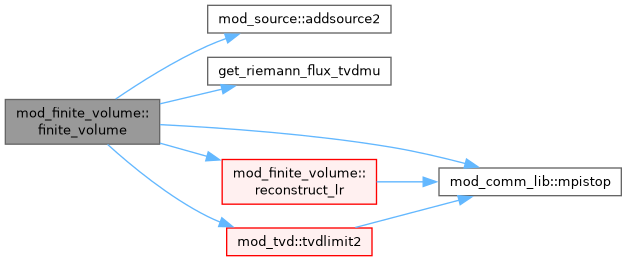
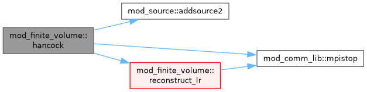
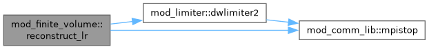

Module with finite volume methods for fluxes. More...
Functions/Subroutines | |
| subroutine, public | hancock (qdt, dtfactor, ixil, ixol, idimslim, qtc, sct, qt, snew, dxs, x) |
| The non-conservative Hancock predictor for TVDLF. | |
| subroutine, public | finite_volume (method, qdt, dtfactor, ixil, ixol, idimslim, qtc, sct, qt, snew, fc, fe, dxs, x) |
| finite volume method | |
| subroutine, public | reconstruct_lr (ixil, ixll, ixrl, idims, w, wlc, wrc, wlp, wrp, x, dxdim) |
| Determine the upwinded wLC(ixL) and wRC(ixR) from w. the wCT is only used when PPM is exploited. | |
Detailed Description
Module with finite volume methods for fluxes.
Function/Subroutine Documentation
◆ finite_volume()
| subroutine, public mod_finite_volume::finite_volume | ( | integer, intent(in) | method, |
| double precision, intent(in) | qdt, | ||
| double precision, intent(in) | dtfactor, | ||
| integer, intent(in) | ixi, | ||
| integer, intent(in) | l, | ||
| integer, intent(in) | ixo, | ||
| l, | |||
| integer, intent(in) | idims, | ||
| integer, intent(in) | lim, | ||
| double precision, intent(in) | qtc, | ||
| type(state) | sct, | ||
| double precision, intent(in) | qt, | ||
| type(state) | snew, | ||
| double precision, dimension(ixi^s,1:nwflux,1:ndim) | fc, | ||
| double precision, dimension(ixi^s,sdim:3) | fe, | ||
| double precision, dimension(ndim), intent(in) | dxs, | ||
| double precision, dimension(ixi^s,1:ndim), intent(in) | x ) |
finite volume method
primitive w^n, used only for the slopes in the VAC-type MUSCL-Hancock corrector
undivided divergence of v at the interface, for the B19 diffusive flux
Definition at line 116 of file mod_finite_volume.t.

◆ hancock()
| subroutine, public mod_finite_volume::hancock | ( | double precision, intent(in) | qdt, |
| double precision, intent(in) | dtfactor, | ||
| integer, intent(in) | ixi, | ||
| integer, intent(in) | l, | ||
| integer, intent(in) | ixo, | ||
| l, | |||
| integer, intent(in) | idims, | ||
| integer, intent(in) | lim, | ||
| double precision, intent(in) | qtc, | ||
| type(state) | sct, | ||
| double precision, intent(in) | qt, | ||
| type(state) | snew, | ||
| double precision, dimension(ndim), intent(in) | dxs, | ||
| double precision, dimension(ixi^s,1:ndim), intent(in) | x ) |
The non-conservative Hancock predictor for TVDLF.
on entry: input available on ixI^L=ixG^L asks for output on ixO^L=ixG^L^LSUBnghostcells one entry: (predictor): wCT – w_n wnew – w_n qdt=dt/2 on exit : (predictor): wCT – w_n wnew – w_n+1/2
Definition at line 19 of file mod_finite_volume.t.

◆ reconstruct_lr()
| subroutine, public mod_finite_volume::reconstruct_lr | ( | integer, intent(in) | ixi, |
| integer, intent(in) | l, | ||
| integer, intent(in) | ixl, | ||
| l, | |||
| integer, intent(in) | ixr, | ||
| l, | |||
| integer, intent(in) | idims, | ||
| double precision, dimension(ixi^s,1:nw) | w, | ||
| double precision, dimension(ixi^s,1:nw) | wlc, | ||
| double precision, dimension(ixi^s,1:nw) | wrc, | ||
| double precision, dimension(ixi^s,1:nw) | wlp, | ||
| double precision, dimension(ixi^s,1:nw) | wrp, | ||
| double precision, dimension(ixi^s,1:ndim) | x, | ||
| double precision, intent(in) | dxdim ) |
Determine the upwinded wLC(ixL) and wRC(ixR) from w. the wCT is only used when PPM is exploited.
RJV: the PPM reconstruction residual and the alternation switch
Definition at line 1178 of file mod_finite_volume.t.

Generated by